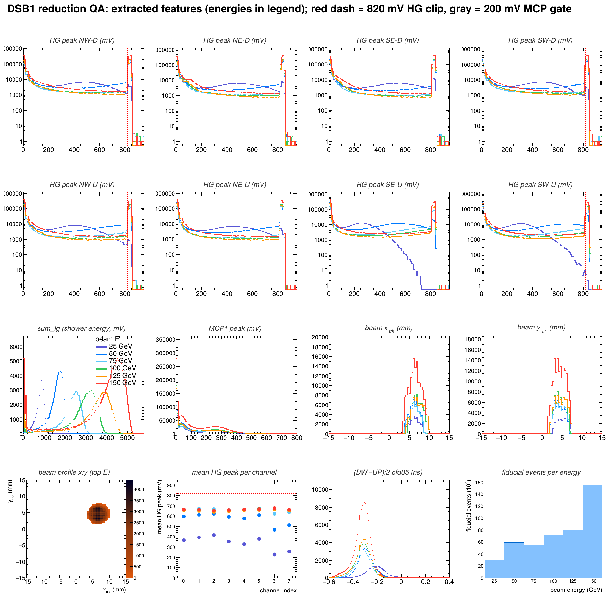
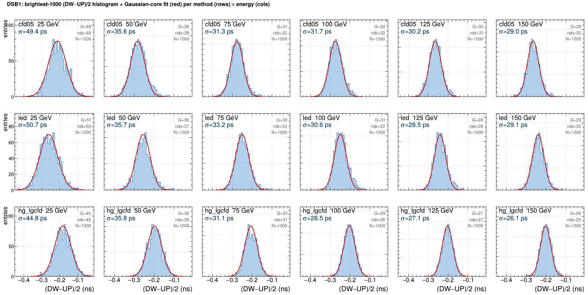
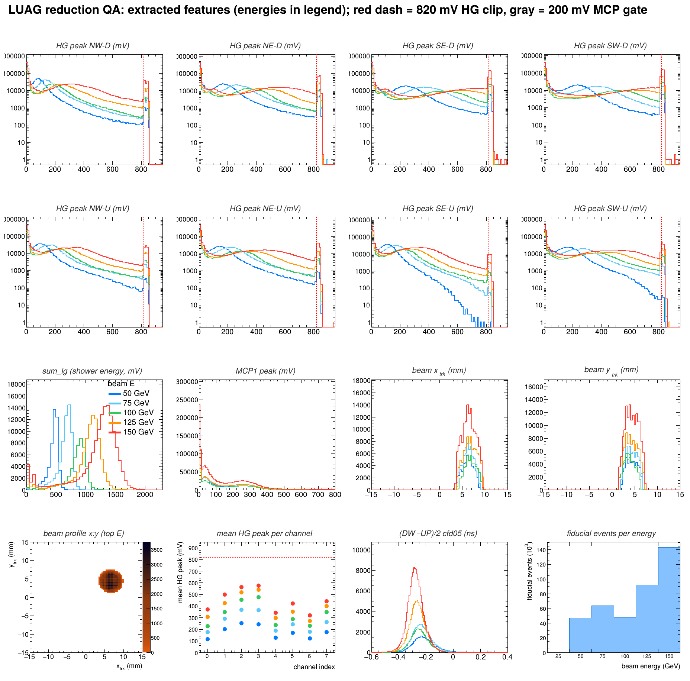
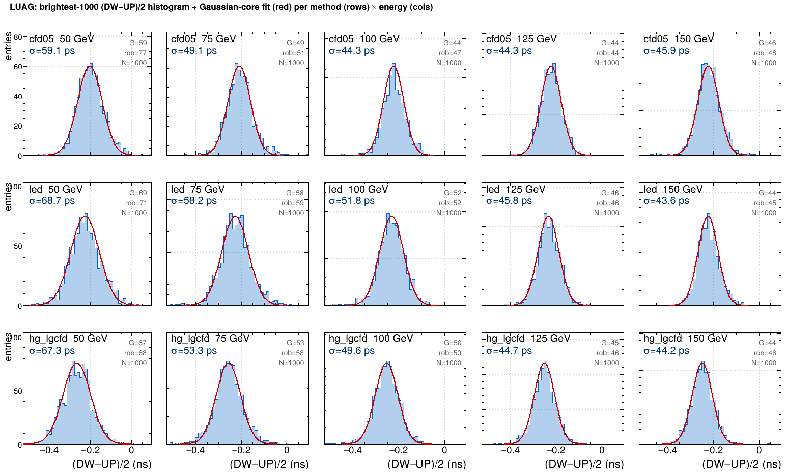
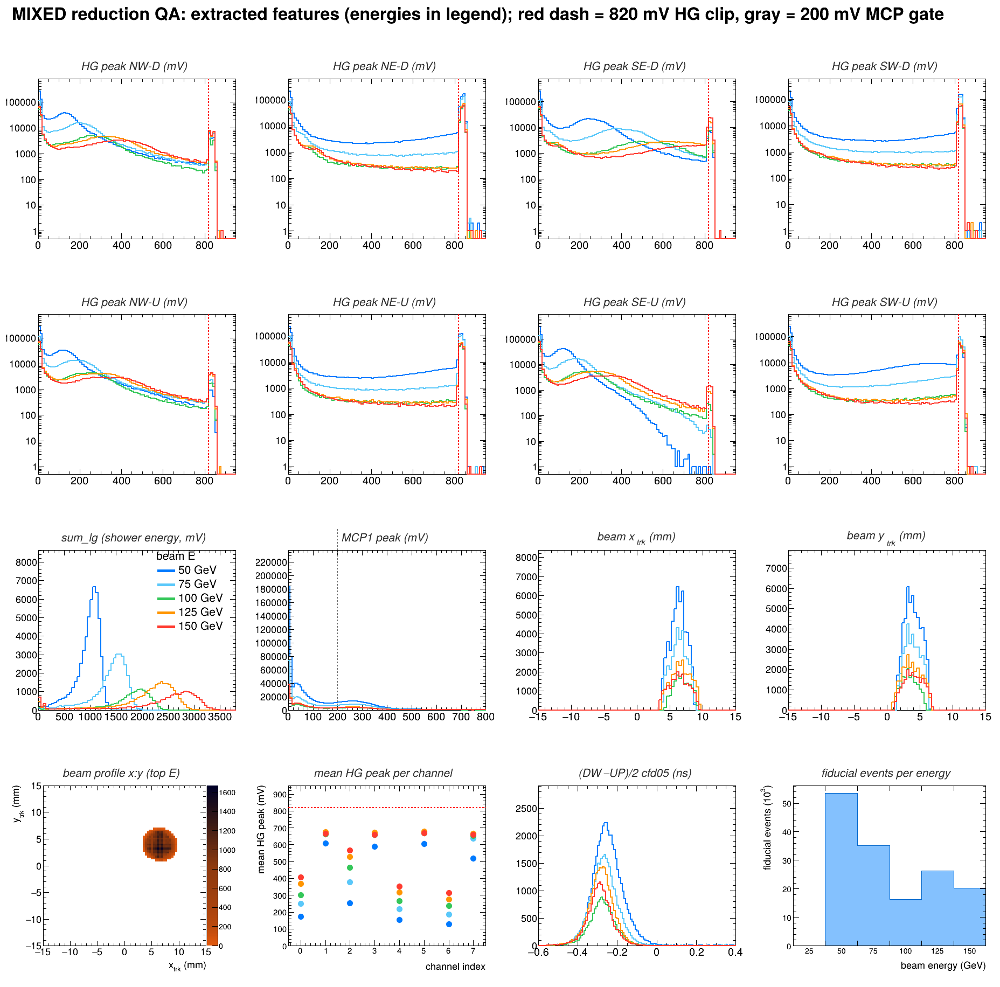
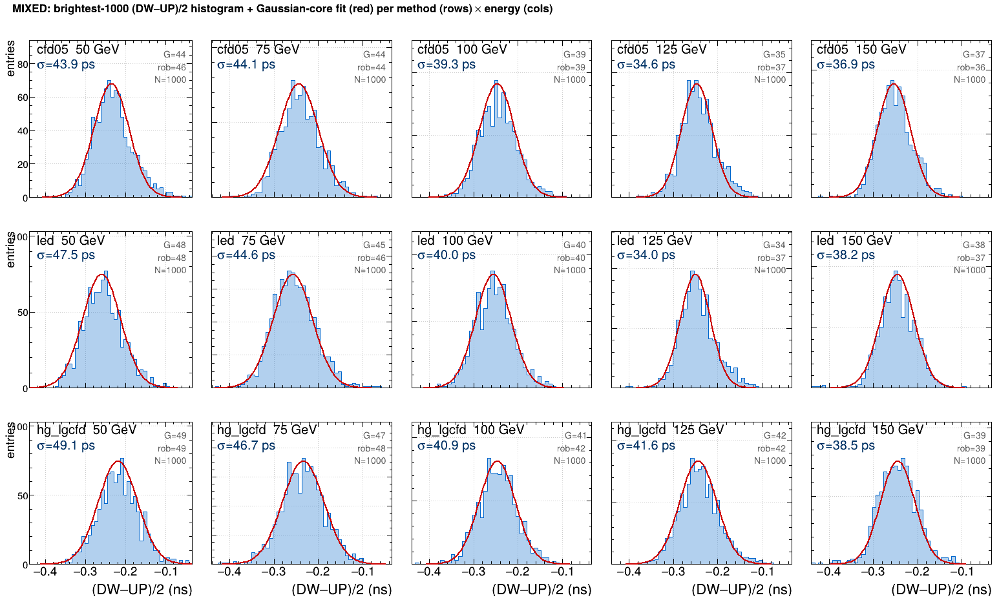
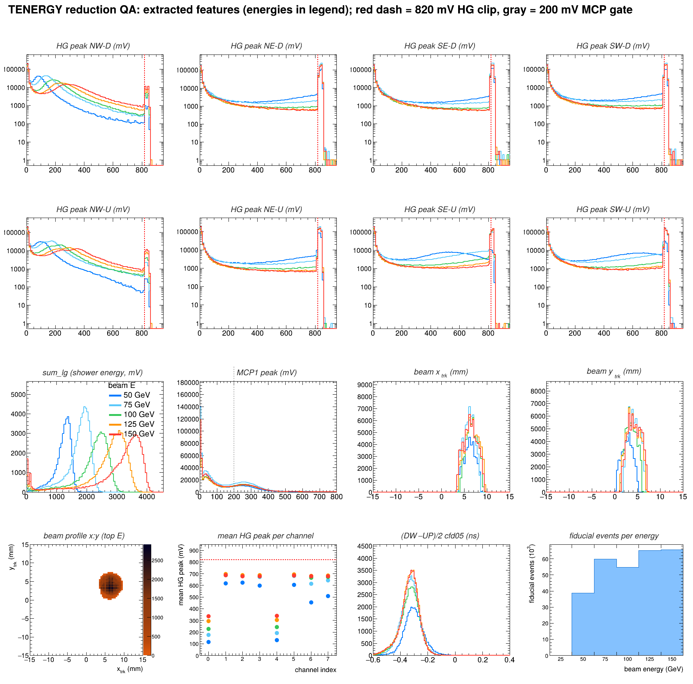
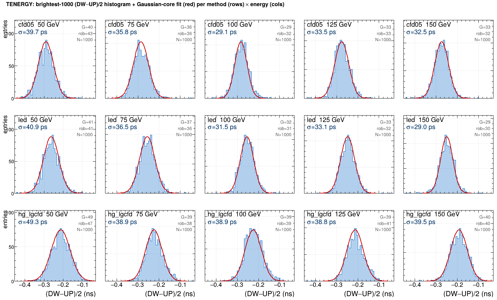

DSB1 DSB1 organic WLS capillary (bright) 25–150 GeV 1 · Waveforms — raw DRS4, mean ± RMS, energies overlaid per-channel average pulses straight off the digitizer (all 6 energies). HG shows the ~820 mV clip; LG is the slow energy pulse.
DSB1 — 8 high-gain timing channels DSB1 — 8 low-gain energy channels 2 · Reduction — extracted features what the reducer pulled from every event: per-channel HG peaks (clip pile-up at 820 mV), sum_lg shower spectrum, MCP reference, beam track, fiducial counts.

DSB1 — 16-panel reduction QA, energies 25(violet)→150(red) 3 · Fits — the σ extraction, every method × energy the brightest-1000 (DW−UP)/2 distribution with its Gaussian-core fit behind every timing point; G = Gaussian-core, rob = robust truncated-RMS.

DSB1 — (DW−UP)/2 distributions + fits (rows: cfd05 / led / lgcfd; cols: energies) 4 · Time resolution — σ_t(E) brightest-1000 (DW−UP)/2 σ_t(E) via the fixed production estimator; (NM)=non-monotonic. Left: all eight methods. Right: adopted-method comparison.
LuAG LuAG:Ce ceramic WLS capillary (dim) 50–150 GeV 1 · Waveforms — raw DRS4, mean ± RMS, energies overlaid per-channel average pulses straight off the digitizer (50 & 150 GeV only). HG shows the ~820 mV clip; LG is the slow energy pulse.
LuAG — 8 high-gain timing channels LuAG — 8 low-gain energy channels 2 · Reduction — extracted features what the reducer pulled from every event: per-channel HG peaks (clip pile-up at 820 mV), sum_lg shower spectrum, MCP reference, beam track, fiducial counts.

LuAG — 16-panel reduction QA, energies 25(violet)→150(red) 3 · Fits — the σ extraction, every method × energy the brightest-1000 (DW−UP)/2 distribution with its Gaussian-core fit behind every timing point; G = Gaussian-core, rob = robust truncated-RMS.

LuAG — (DW−UP)/2 distributions + fits (rows: cfd05 / led / lgcfd; cols: energies) 4 · Time resolution — σ_t(E) brightest-1000 (DW−UP)/2 σ_t(E) via the fixed production estimator; (NM)=non-monotonic. Left: all eight methods. Right: adopted-method comparison.
MIXED mixed module: NE,SW = DSB1 · NW,SE = LuAG 50–150 GeV 1 · Waveforms — raw DRS4, mean ± RMS, energies overlaid per-channel average pulses straight off the digitizer (50,75,100,125,150 GeV). HG shows the ~820 mV clip; LG is the slow energy pulse.
MIXED — 8 high-gain timing channels MIXED — 8 low-gain energy channels 2 · Reduction — extracted features what the reducer pulled from every event: per-channel HG peaks (clip pile-up at 820 mV), sum_lg shower spectrum, MCP reference, beam track, fiducial counts.

MIXED — 16-panel reduction QA, energies 25(violet)→150(red) 3 · Fits — the σ extraction, every method × energy the brightest-1000 (DW−UP)/2 distribution with its Gaussian-core fit behind every timing point; G = Gaussian-core, rob = robust truncated-RMS.

MIXED — (DW−UP)/2 distributions + fits (rows: cfd05 / led / lgcfd; cols: energies) 4 · Time resolution — σ_t(E) brightest-1000 (DW−UP)/2 σ_t(E) via the fixed production estimator; (NM)=non-monotonic. Left: all eight methods. Right: adopted-method comparison.
TENERGY segmented 'Energy' module 50–150 GeV 1 · Waveforms — raw DRS4, mean ± RMS, energies overlaid per-channel average pulses straight off the digitizer (50 & 150 GeV only). HG shows the ~820 mV clip; LG is the slow energy pulse.
TENERGY — 8 high-gain timing channels TENERGY — 8 low-gain energy channels 2 · Reduction — extracted features what the reducer pulled from every event: per-channel HG peaks (clip pile-up at 820 mV), sum_lg shower spectrum, MCP reference, beam track, fiducial counts.

TENERGY — 16-panel reduction QA, energies 25(violet)→150(red) 3 · Fits — the σ extraction, every method × energy the brightest-1000 (DW−UP)/2 distribution with its Gaussian-core fit behind every timing point; G = Gaussian-core, rob = robust truncated-RMS.

TENERGY — (DW−UP)/2 distributions + fits (rows: cfd05 / led / lgcfd; cols: energies) 4 · Time resolution — σ_t(E) brightest-1000 (DW−UP)/2 σ_t(E) via the fixed production estimator; (NM)=non-monotonic. Left: all eight methods. Right: adopted-method comparison.